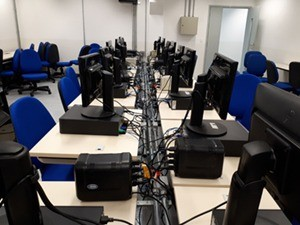
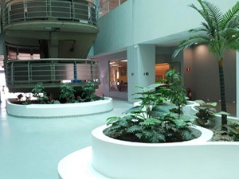

Faculdade de Tecnologia da Baixada Santista Rubens Lara é um órgão estadual de ensino superior que oferece os cursos de: Análise e Desenvolvimento de Sistemas, Ciência de Dados, Gestão Empresarial, Gestão Portuária, Gestão de Recursos Humanos, Logística, Sistemas para Internet, Processos Gerenciais AMS e Logística AMS.
| Curso | Manhã | Tarde | Noite |
|---|---|---|---|
| Análise e Desenvolvimento de Sistemas | 35 | -- | 35 |
| Ciência de Dados | 28 | -- | -- |
| Gestão Empresarial(*) | 28 | -- | -- |
| Gestão Portuária | 28 | -- | 35 |
| Gestão de Recursos Humanos | -- | -- | 35 |
| Logística | 28 | -- | 35 |
| Sistemas Para Internet | 35 | -- | -- |
| Processos gerenciais AMS | -- | 40 | -- |
| Logística AMS | -- | 40 | -- |
Os cursos são concebidos, desenvolvidos e ministrados visando atender segmentos atuais e emergentes do mercado de trabalho. Os currículos são flexíveis, compostos por disciplinas de formação básica, tecnológica e específica, de acordo com a área de atuação do profissional a ser formado. Estruturalmente, o ensino se apóia em projetos reais, estudo de casos e em laboratórios específicos aparelhados para reproduzir as condições do ambiente profissional, permitindo ao futuro tecnólogo participar de forma inovadora nos vários trabalhos de sua área.

A Faculdade de Tecnologia da Baixada Santista,
faculdade pública de Santos
foi implantada inicialmente com o curso superior de Tecnologia de Processamento de Dados, com duas turmas de 40 alunos, funcionando no período da manhã e da noite.
Com a construção de um novo prédio, também localizado em seu antigo endereço (Av. Bartolomeu de Gusmão, 110), a instituição passou a oferecer também o curso superior de Tecnologia em Informática com Ênfase em Gestão de Negócios (com 40 vagas semestrais, à tarde), e o curso superior de Tecnologia em Logística com Ênfase em Transportes (com 80 vagas semestrais, sendo 40 à tarde e 40 à noite).
Ao longos dos anos, novas graduações foram criadas, e algumas das formações já oferecidas tiveram suas matrizes curriculares reestruturadas.
A partir do segundo semestre de 2019, a Fatec Rubens Lara passou a atender em novo endereço, estando agora localizada no centro da cidade de Santos.
A educação pública profissional e tecnológica dentro de referenciais de excelência, visando o desenvolvimento tecnológico, econômico e social do Estado de São Paulo.

Para conhecer o calendário deste semestre da Fatec Rubens Lara, clique neste link .
FATEC Baixada Santista Rubens Lara